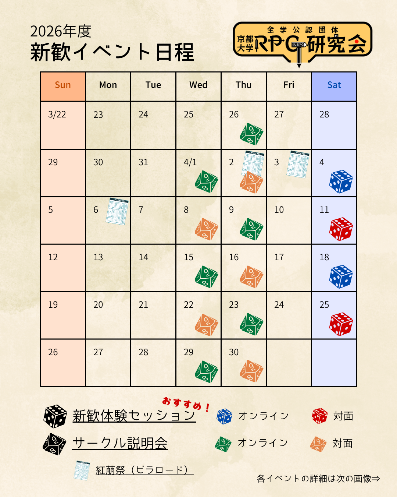
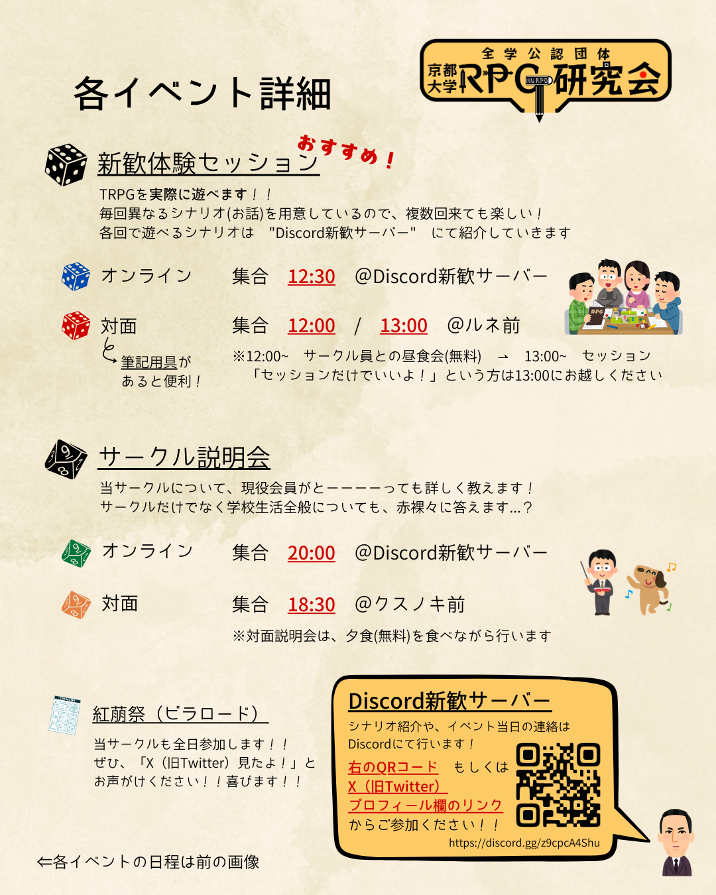

2026年度 新歓活動
新歓サーバー(discord)のリンクはこちら
京都大学RPG研究会では新歓活動として、毎年4月を中心に、新入生のための説明会や、新入生歓迎セッション等を行っています。
TRPG経験者や、やったことはないが知っている方はもちろん、「TRPGって何？」というような全くの初心者の方でも、TRPGがどんなものかというところから、先輩が親切に教えてくれますので、とりあえず説明会をのぞきに来てみてください。
当研究会の活動はオンライン、対面の両方で行われます。
 |
 |
説明会
当サークルの活動内容についての説明会です。4月末まで毎週水曜日、木曜日に、オンラインの際はdiscordのRPG研新歓サーバーで20:00より、オフラインの際には18:30にクスノキ前に集合し行われる予定です。オンラインの際は新歓サーバーの「説明会」とあるVC部屋に来てください。説明会自体は30分程度を予定しています。
新入生歓迎セッション
TRPGの体験セッション会です。discordのRPG研新歓サーバーまたはルネ横にある共用室で行われます。開始時刻になりましたらオンラインの場合は新歓サーバーの「卓分け部屋」に、オフラインの場合はルネ前に来てください。TRPGは実際に体験してみないと楽しさの分からないゲームなので、未体験の方は是非一度お越し下さい。オンラインセッションは基本的にユドナリウム等のオンラインセッションツールを使用して行われています。使用しているPCやブラウザ等によってはツールが快適に作動しない場合があります。事前の確認が出来ていると当日スムーズに参加できますので、都合がつく場合、水木に行っている説明会に参加していただくのが望ましいです。